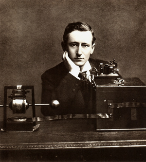

Что слушала Европа?
Слава итальянца Гильермо Маркони вызывает больше вопросов, нежели биографии остальных участников этой запутанной истории. При этом нельзя отрицать, что его имя тоже вписано в хроники развития радио. Ведь именно Маркони в 1896 году первым получил патент на гаджет, способный передавать и принимать радиоволны. Его прибор был очень похож на изобретение как Попова, так и Теслы, а назывался «Усовершенствования в передаче электрических импульсов и сигналов в передающем аппарате».
Обратите внимание на первое слово — Маркони действительно улучшил чужие изобретения, добавив несколько катушек и металлические пластины. Правда, в своей заявке на патент он намеревался использовать прибор для приёма сигналов не только по воздуху, но и через землю и воду, что несколько противоречит законам физики.

Остальная слава итальянца обусловлена тем, что он толково продвигал свои радиоприборы — например, провёл первый радиорепортаж. Когда началась очередная парусная регата, он оснастил радиоаппаратурой яхту принца Уэльского. Тот незадолго до заплыва повредил ногу, и в Британии очень волновались, как же сын королевы Виктории справится с гонками. Приёмник Маркони бесперебойно поставлял сводки о здоровье аристократа — эти новости радостно подхватывала пресса. Вскоре всё королевство узнало не только о погоде на море, но и об изобретениях итальянца.
Приёмники Маркони начали расходиться по судам и домам. Да, это больше заслуга рекламы, но повсеместное распространение радио спасло сотни жизней. Например, экипаж «Титаника» подал сигнал SOS именно по аппарату, установленному «Международной компанией морской связи Маркони». Если бы не это устройство — неизвестно, сколько людей удалось бы спасти.